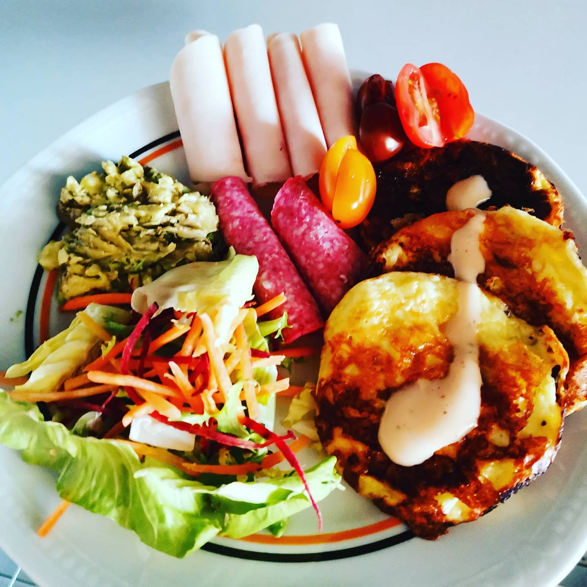

Syrové lievance podľa @bettyszaboova — Normy Jedál
Dnešné low carb ranajky: syrové lievance - nastruhat celý hermelín, pridať polku tvarohu, 2 vajíčka, opekať na panvici, sol, korenie. Pridať zeleninu, šunku... 🥬🍅🥑🧀 #bettylovescooking #bettylovesbaking #instamnam #lievance #pancakes #cheese #cheesepancakes #syrovelievance #lowcarb #keto #lc #diet #befit #behealthy #homecooking #domacevarenie #ranajky #fats #instafood #breakfast